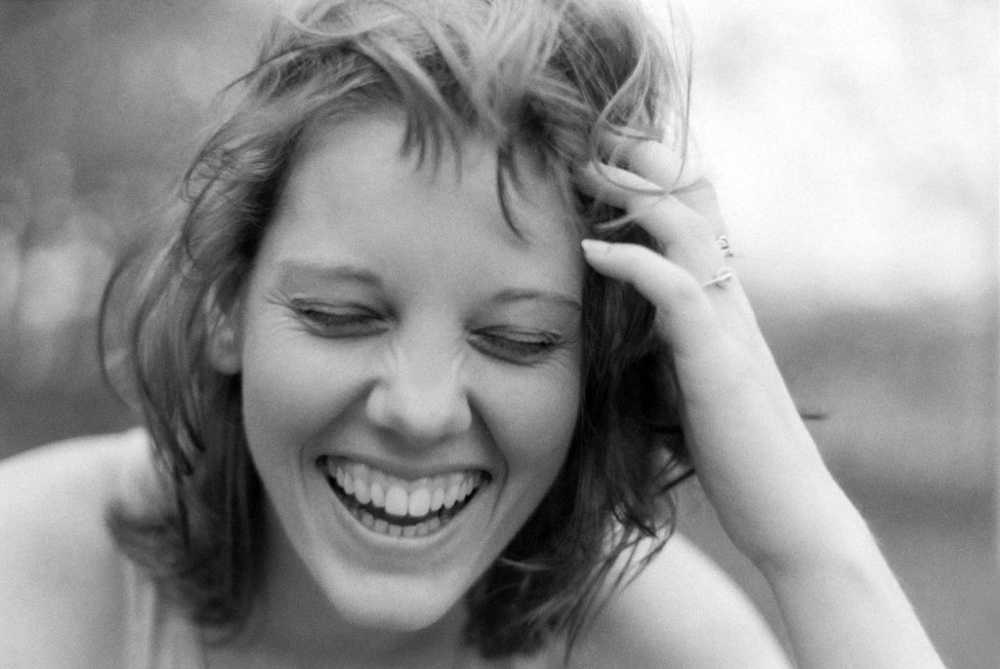
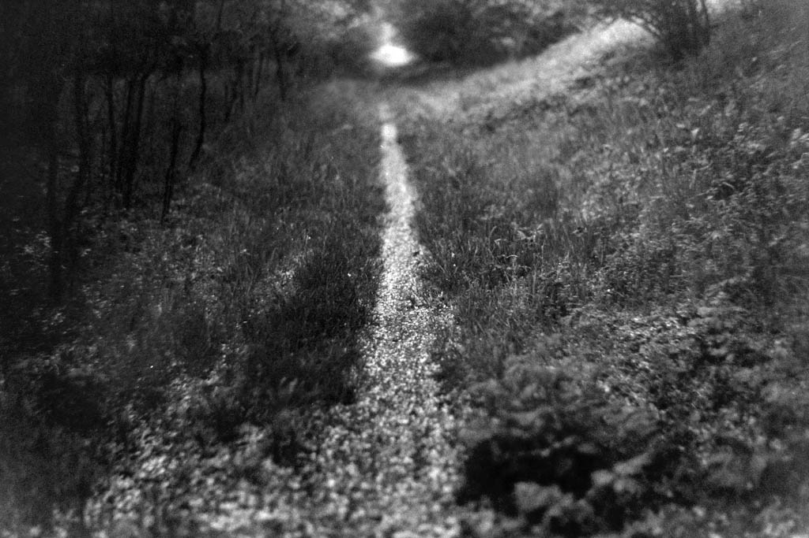
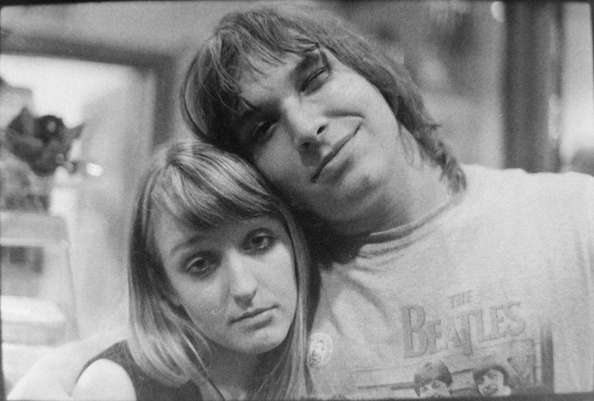
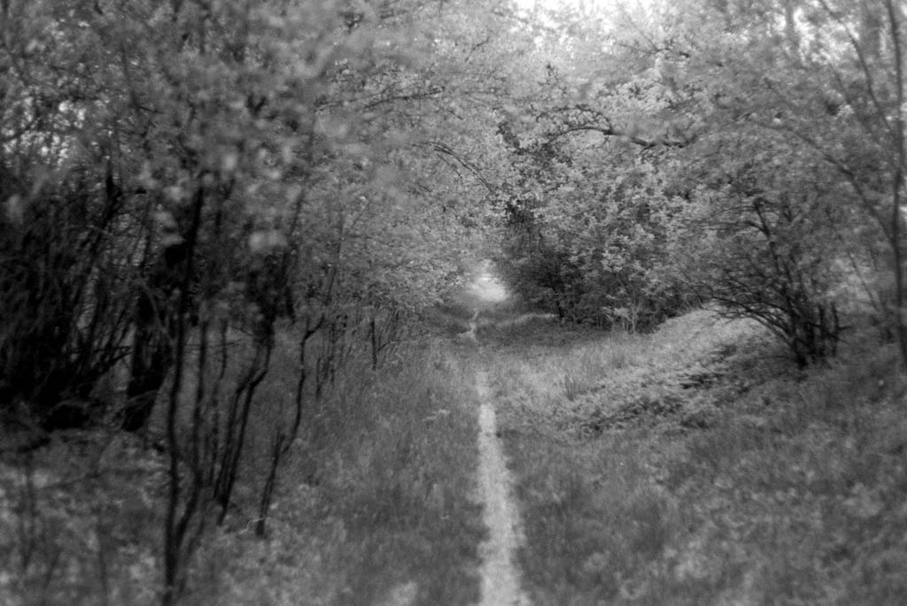
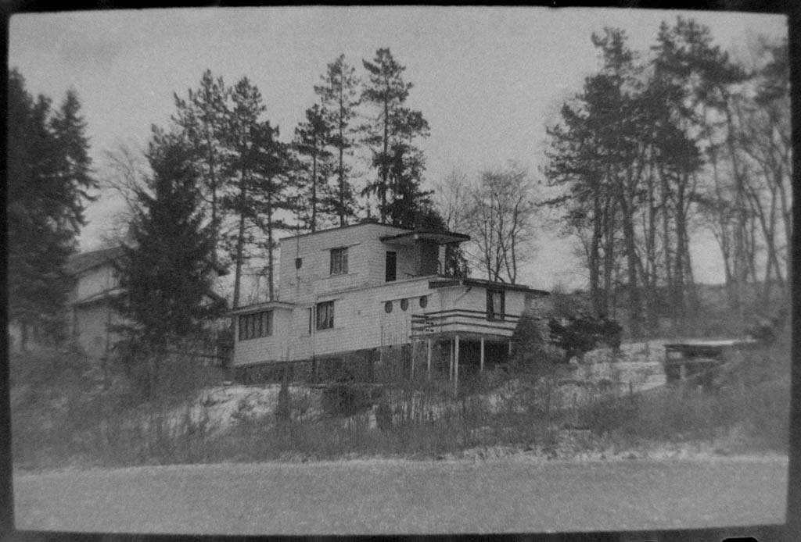
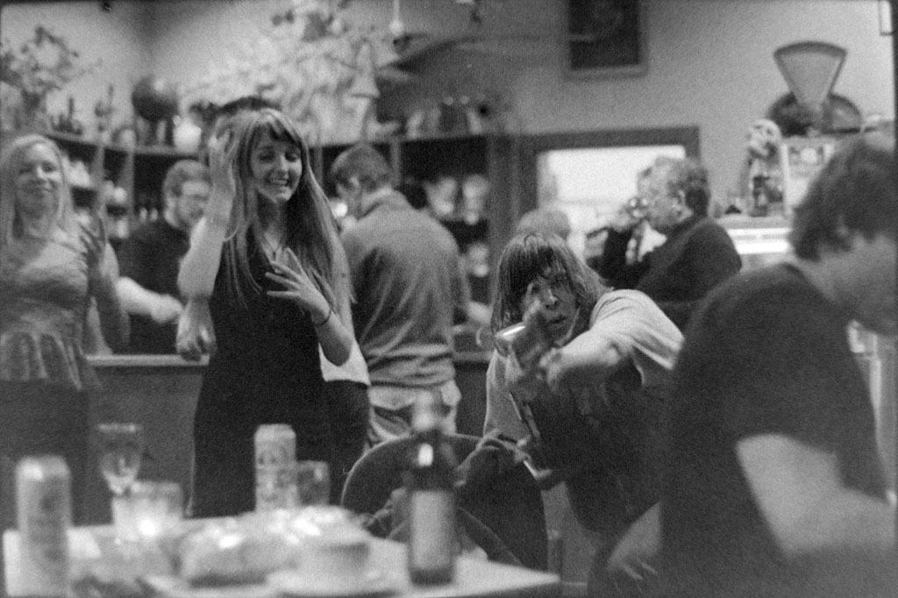
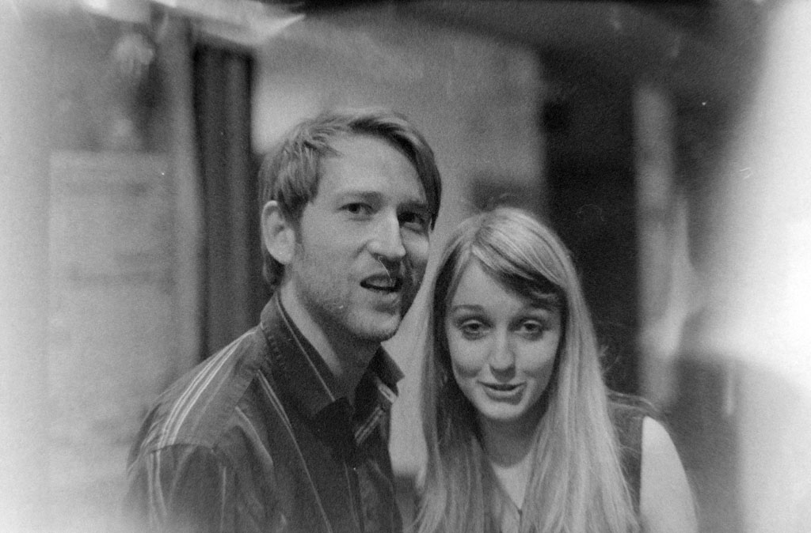

MARTIN JENČ
KINOFILM I
Eva Zusková
Cestička
Jeskia Černá

Opilí
Cestička 2
Chata v lesích
Wintrovky 1
Wintrovky 2
TITULKY
Fotograf: Martin JenčPŘED OBJEKTIVEM
Káťa Elznicová
Markéta Carvanová
Štěpule Drozdová
Matyáš Kučera
Jakub Týče
ANOTACE
Potom, co si Martin koupil analogový fotoaparát, snažil se s ním zachytit, co nejvíce zajímavých okamžiků se mu naskytlo s místy až snovou příchutí. S přesně takovou, jakou dokáže fotografii vtisknout nejvěrněji pouze tento druh přístroje. V objektivu se mu mihnul zářící úsměv Evy Zuskové, tajemný výraz ve tváři Jesiky Černé či společensky příjemně unavené pohledy Zusky Formánkové, mě a dalších členů Tylova divadla v Rakovníku. Není od věci poznamenat, že fotografie, co Martin pořídil na večeru při oslavách Wintrovek (Wintrova Rakovníka) v již zmíněném divadle zobrazují i velmi přátelskou atmosféru, jež tam onen večer vládla. Album mimo jiné ukazuje, jak si Jenč dokáže poradit s vyobrazením samotné přírody nebo objektů bez toho, aniž by na snímcích figuroval jakýkoliv člověk. Jiří Štraub© 2013 MARTIN JENČ All Rights Reserved